新番列表
PSYCHO-PASS 心靈判官 第三季
碧藍幻想 第二季
高分少女 第二季
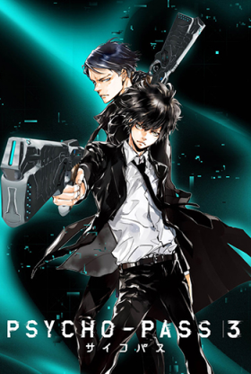
《PSYCHO-PASS心靈判官》是一個心理、性格皆受到監視控管並加以數值化的年代，其測量出的指數通稱為PSYCHO-PASS，以此衡量市民犯罪的可能性。故事描述執行官與監視官組成的搭檔追緝犯罪者以及各式潛在犯的故事。
官方網站
PV
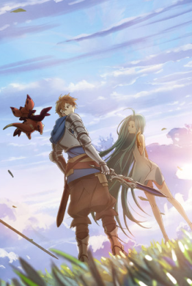
故事敘述與羽蜥碧一同生活在賽克汀瑟島上的善良少年格蘭，從小懷抱著前往空之盡頭伊斯塔魯西亞的夢想。而在某日，格蘭目擊了軍艦爆炸事故，並撿到了一名從軍艦上掉落、能夠控制星晶獸的神祕少女露莉亞。
官方網站
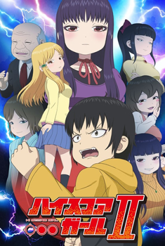
以1990年代的對戰格鬥遊戲熱潮為舞台，由引發熱潮的遊戲《快打旋風Ⅱ》造成男主角「矢口春雄」與女主角「大野晶」邂逅的戀愛喜劇作品。
官方網站
PV
花牌情緣 第三季
七大罪 第三季
刀劍神域 第三季 後半
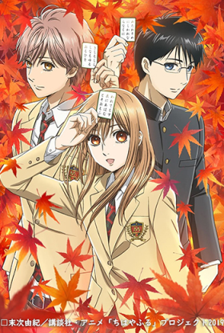
以日本傳統纸牌遊戲“歌留多”為核心，描写了尋夢少女綾瀨千早和同伴們的青春故事。
官方網站
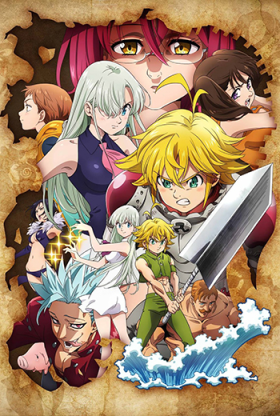
這是個關於人和非人之物的世界尚未分隔的古老物語，以布里塔尼亞大陸為舞台，描述由七位大罪人所組成的傳說騎士團——〈七大罪〉的記錄。
官方網站
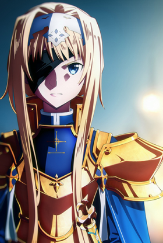
描述「死槍事件」結束的半年後，桐人答應菊岡誠二郎去參加新款OLG的測試。沒想到在打工空檔時，在現實世界中竟遇上艾恩葛朗特時的殺人公會「微笑棺木」、也是「死槍」事件的餘黨前來復仇。
官方網站
我的英雄學院 第四季
歌舞伎町夏洛克
BEASTARS
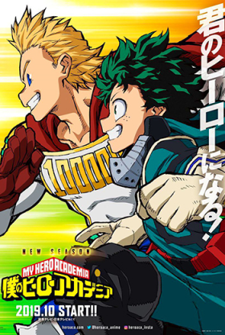
這個世界從某一天開始，新生的人們突然開始展現出名為「個性」的特殊能力，本該只出現在架空故事中的超能力者成為現實的存在，讓整個人類社會陷入變化與動盪。
官方網站
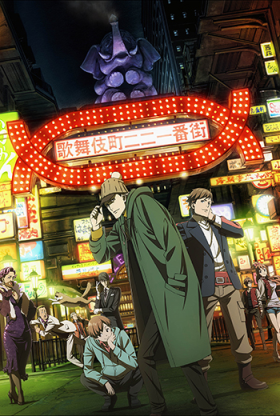
新宿區的東邊區域，混沌城鎮的中心閃爍著霓虹燈，伴隨強光產生的影子，在好像會發生獵奇殺人事件的夜裡，舞台布幕悄悄的拉開...。
官方網站
PV1
PV2
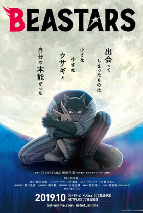
在草食動物和肉食動物共存的世界，初高中直升寄宿制的切里頓(チェリートン)學院中，一名叫提姆的羊駝被咬殺－－這是這個世界最大的禁忌，也是兩種族間無法跨越的溝壑；同屬戲劇社，心思細膩卻沉默寡言的青年狼雷格西卻被懷疑是犯人...。
官方網站
PV1
PV2
索瑪麗與森林之神
入間同學入魔了
星合之空
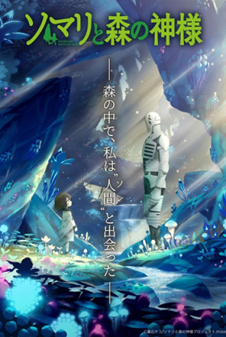
這個世界被異形生物所支配，而人類則處於食物鏈的最底層，並面臨滅絕的危機。 某天，一名偽裝成「牛角族」的人類少女與森林守護者「哥雷姆」相遇，並展開踏上尋找人類住民的旅途。
官方網站
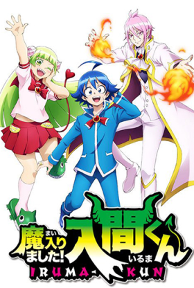
無法拒絕任何拜託的老好人鈴木入間，是個從1歲開始就踏入社會、為了金錢東奔西走、在修羅場求升的十四歲少年，他的父母為了金錢將他賣給了惡魔！陰差陽錯之下他簽下了惡魔契約、進入了惡魔學院、成為了特待生，並且即將與學院第一的新生代表決鬥——
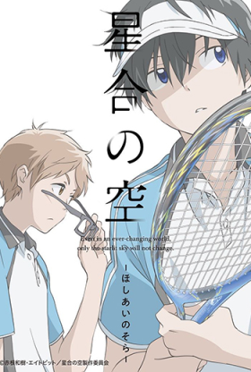
該作以面臨廢部的男子中學軟式網球部為舞台，描繪了心懷各種想法的少年們通過軟式網球而獲得成長的故事。
官方網站
PV
STAND MY HEROES
PET
ACTORS
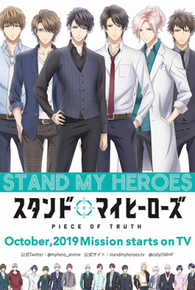
女主角因為擁有特殊體質，而破例獲選為隸屬政府單位的麻藥（麻醉藥品）取締官，在她身邊的伙伴、情報來源與調查對象等，皆是帥氣的男性角色。
官方網站
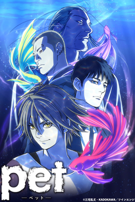
所謂「PET」指的是有著改變他人記憶的超能力少年，他們被黑社會管理操控來替黑社會達成不可告人的目的，而這群「PET」的領袖為了拯救自己的同伴居然從黑社會手裡逃走了。
官方網站
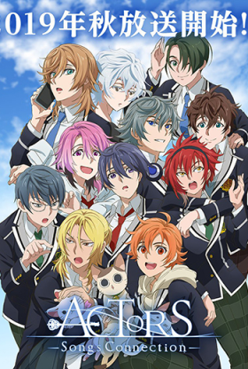
《 ACTORS 》雖然是歌曲CD企劃，但世界觀和人物都有詳細的設定，背景舞台為巨大學園都市群中的「 私立天翔學園 」，各個角色以翻唱VOCALOID歌曲為中心，並展開廣播劇CD、小說等媒體企劃的青春物語。
官方網站
送出